Équipement / Maps
Maps & lieux
GTA 6 se déroule dans l'État fictif de Leonida. Rockstar a officiellement nommé 6 régions, et le matériel officiel (bandes-annonces, captures, Extended Look) a révélé de nombreux comtés, villes, quartiers et lieux : 37 fiches à explorer ci-dessous.
🗺️ Carte interactive de Leonida
Comtés, régions, quartiers et points d'intérêt sur un schéma cliquable.
 © Rockstar Games
© Rockstar GamesVice City
Zone urbaine
 © Rockstar Games
© Rockstar GamesPort Gellhorn
Zone urbaine
 © Rockstar Games
© Rockstar GamesAmbrosia
Région confirmée
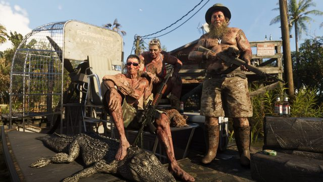
© Rockstar GamesGrassrivers
Zone rurale
 © Rockstar Games
© Rockstar GamesMount Kalaga
Zone rurale
 © Rockstar Games
© Rockstar GamesLeonida Keys
Zone rurale
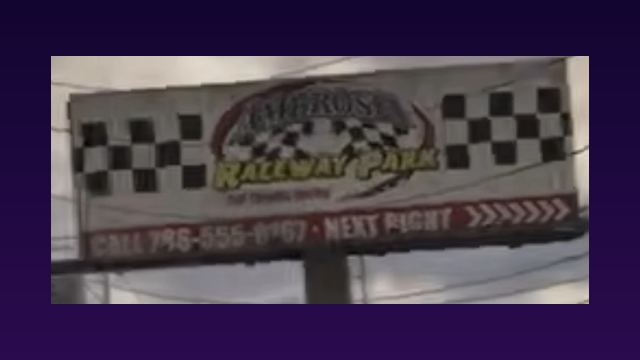
© Rockstar GamesAmbrosia Raceway Park
Lieu d'intérêt
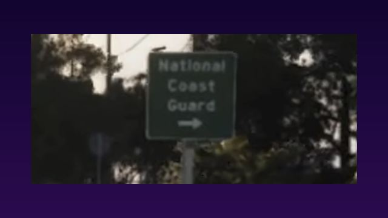
© Rockstar GamesBase de la garde côtière nationale
Lieu d'intérêt
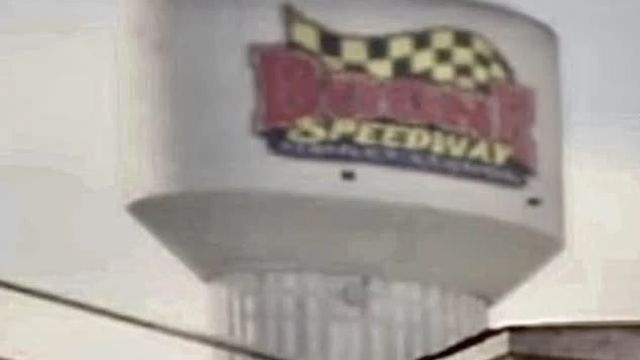
© Rockstar GamesBoone Speedway
Lieu d'intérêt
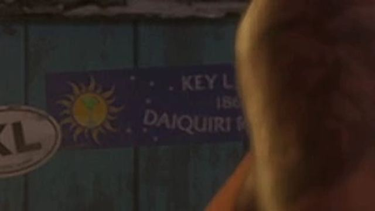
© Rockstar GamesDaiquiri Republic
Lieu d'intérêt
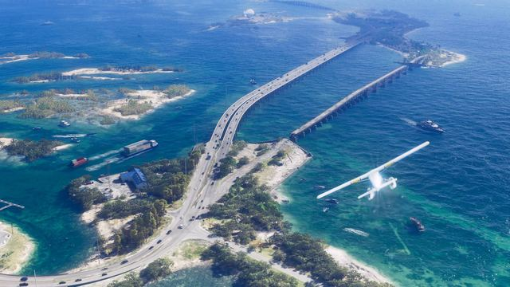
© Rockstar GamesGolfe du Mexique
Lieu d'intérêt
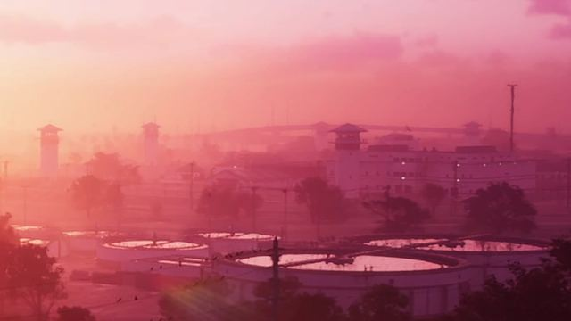
© Rockstar GamesLeonida Penitentiary
Lieu d'intérêt
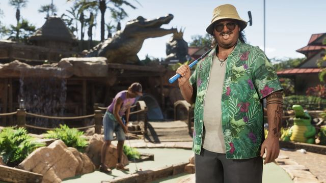
© Rockstar GamesMinigolf à thème alligators
Lieu d'intérêt
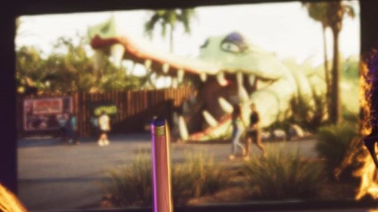
© Rockstar GamesParc d'attractions façon Gatorland
Lieu d'intérêt
 © Rockstar Games
© Rockstar GamesPortViceCity
Lieu d'intérêt
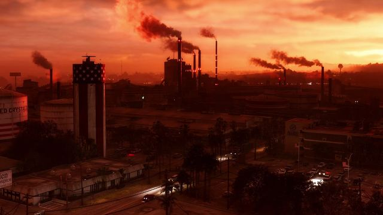
© Rockstar GamesRaffinerie de sucre Allied Crystal
Lieu d'intérêt
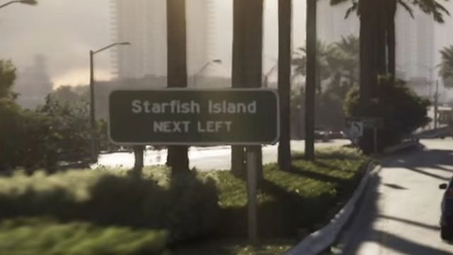
© Rockstar GamesStarfish Island
Lieu d'intérêt
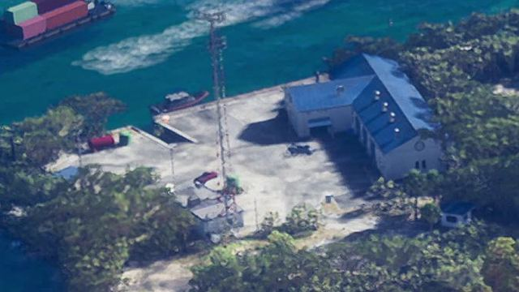
© Rockstar GamesStation de la garde côtière (Leonida Keys)
Lieu d'intérêt
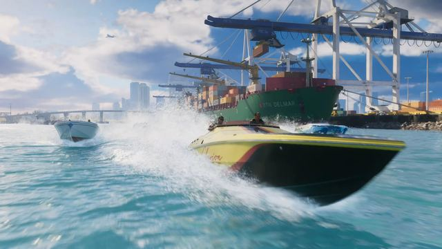
© Rockstar GamesBaie du sud de Leonida
Région ou comté
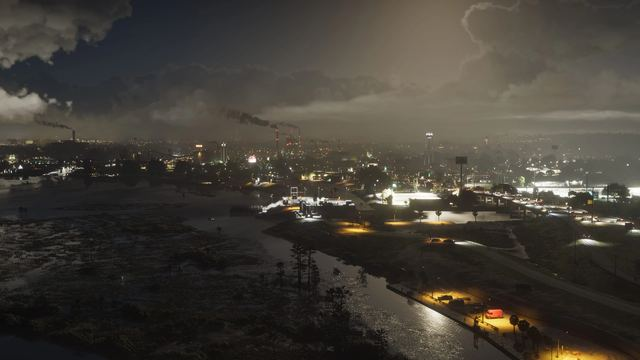
© Rockstar GamesComté d'Ambrosia
Région ou comté
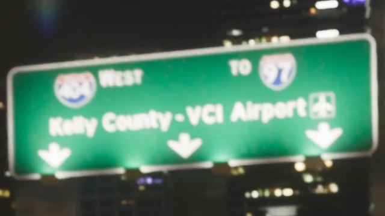
© Rockstar GamesComté de Kelly
Région ou comté
 © Rockstar Games
© Rockstar GamesComté de Leonard
Région ou comté
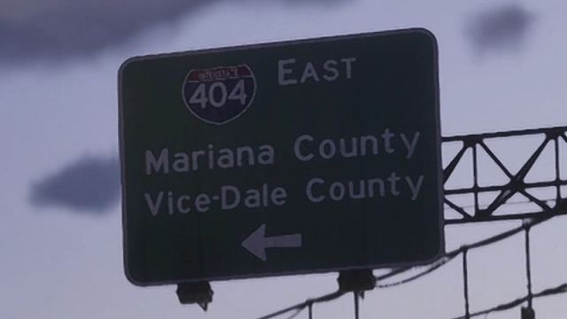
© Rockstar GamesComté de Mariana
Région ou comté
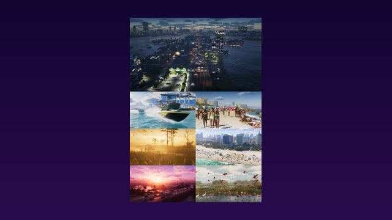
© Rockstar GamesComté de Vice-Dale
Région ou comté
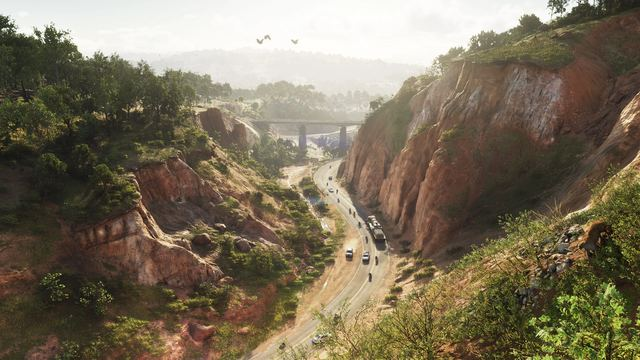
© Rockstar GamesComté présumé du nord de Leonida
Région ou comté
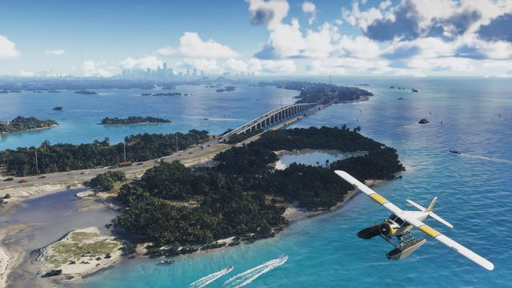
© Rockstar GamesOcéan Atlantique
Région ou comté
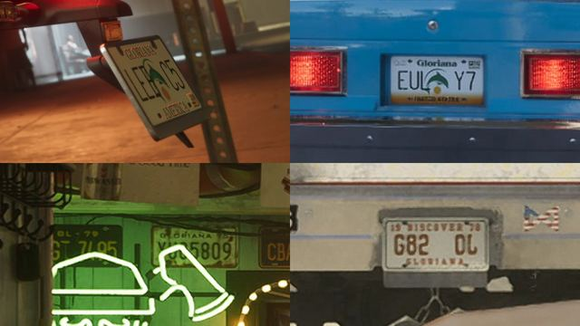
© Rockstar GamesÉtat de Gloriana
Région ou comté
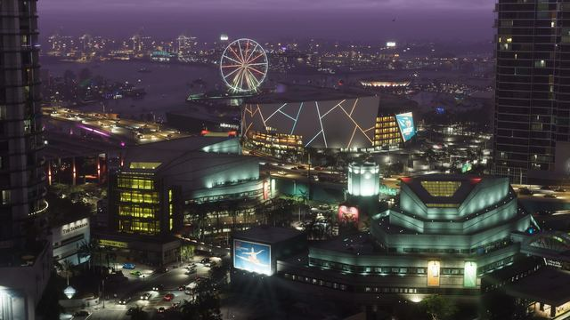
© Rockstar GamesDowntown Vice City
Ville ou quartier
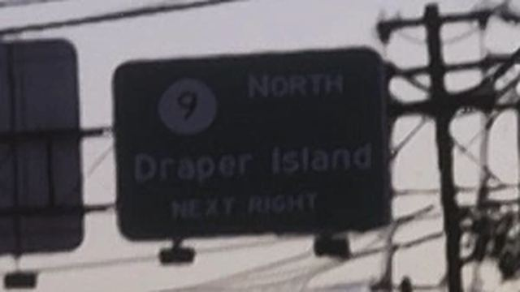
© Rockstar GamesDraper Island
Ville ou quartier
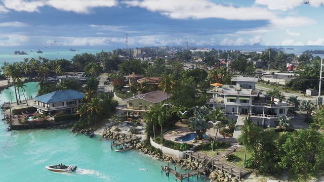
© Rockstar GamesKey Lento
Ville ou quartier
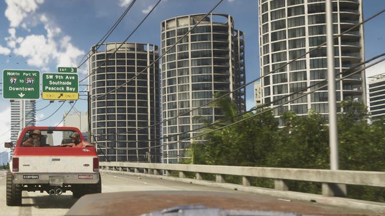
© Rockstar GamesPeacock Bay
Ville ou quartier
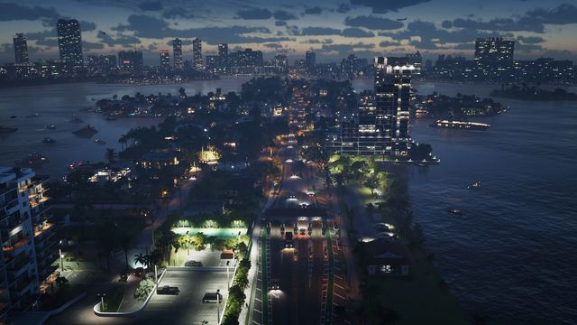
© Rockstar GamesRialto Islands
Ville ou quartier
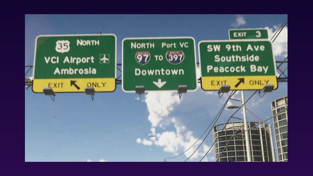
© Rockstar GamesSouthside
Ville ou quartier
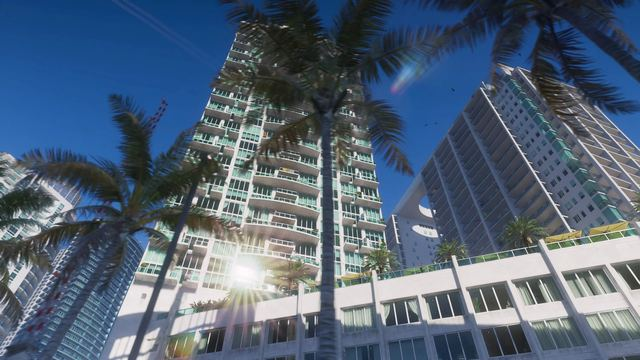
© Rockstar GamesTequesta
Ville ou quartier
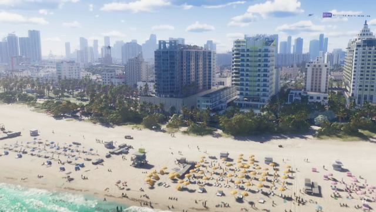
© Rockstar GamesVice Beach
Ville ou quartier
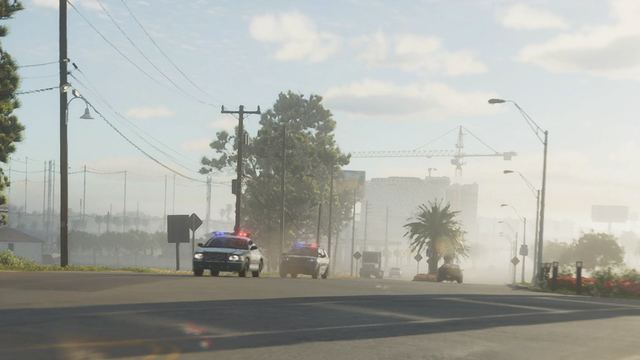
© Rockstar GamesWaning Sands
Ville ou quartier
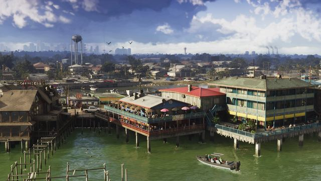
© Rockstar GamesWatson Bay
Ville ou quartier
Points d'intérêt repérés
Lieux identifiés dans les bandes-annonces et captures officielles, en plus des six grandes régions.
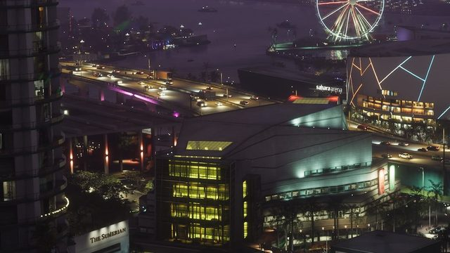
© Rockstar GamesParc à thème
Inspiré de Gatorland · repéré en capture officielle
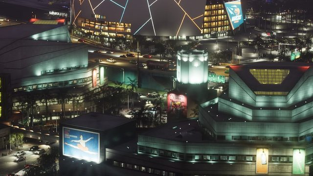
© Rockstar GamesStade de football
Repéré en bande-annonce
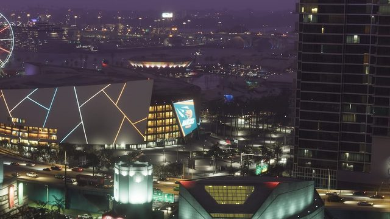
© Rockstar GamesAmphithéâtre
Repéré en bande-annonce